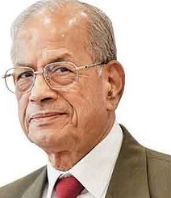

From Wikipedia, the free encyclopedia
Elattuvalapil Sreedharan (born 12 June 1932) is an Indian engineer, who is credited with changing the face of public transport in India with his leadership in building the Konkan Railway and the Delhi Metro while he served as the managing director of Delhi Metro Rail Corporation DMRC between 1995 and 2012[2]. He was awarded the Padma Shri by the Government of India in 2001, [3] the Padma Vibhushan in 2008,[4] the Chevalier de la Légion d'honneur[3] in 2005 by the French government and was named one of Asia's Heroes by TIME magazine in 2003.[5][6] Sreedharan was appointed by the former UN Secretary General Ban Ki-moon to serve on the United Nations's High Level Advisory Group on Sustainable Transport (HLAG-ST) for a period of three years in 2015. He is also a member of Mata Vaishno Devi Shrine Board.[7] [8][9]
Born 12 June 1932 (age 88)
Karukaputhur, Madras Presidency<, British India (now in Thrithala constituency Kerala, India)